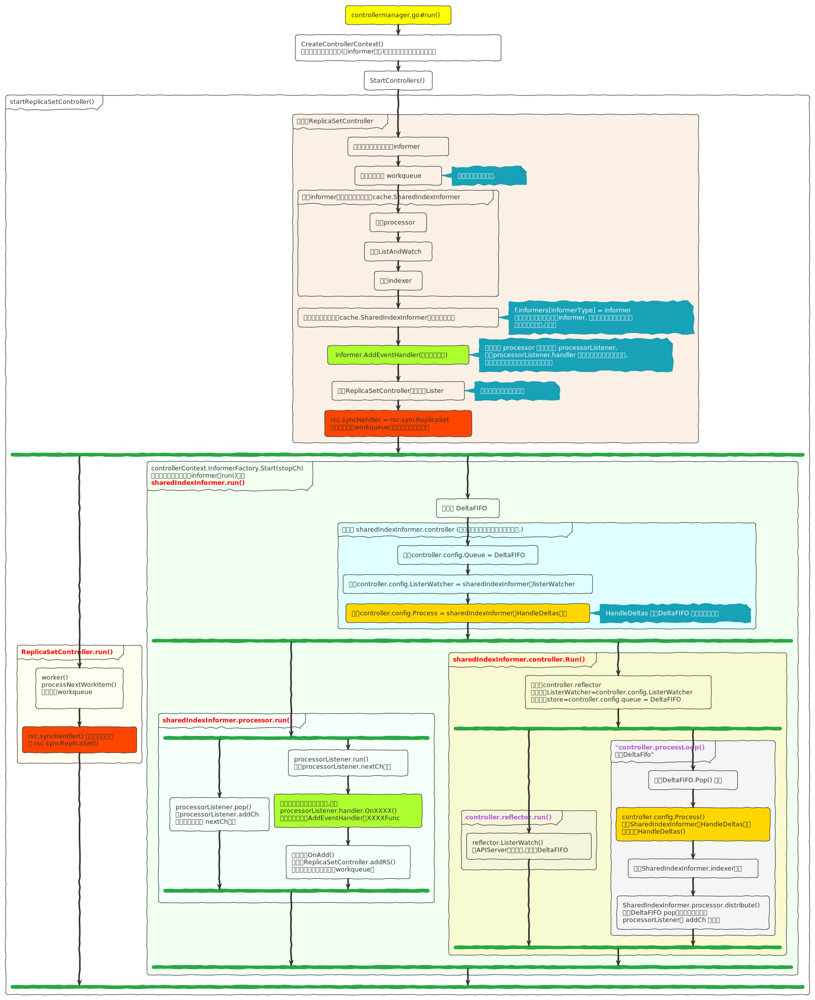

- 待整理…
1 默认控制器
Controller Manager 是多个控制器的组合, 另外像调度器其实是一种特殊的控制器.
2 控制器架构原理
2.1 核心逻辑
k8s中每一个控制器 都对应负责k8s中的一种资源, 保证这种资源是其期待的状态
每个 Controller 事实上都是一个 control loop死循环,负责侦听其管控的对象,当对象发生变更时完成配置.
Controller 配置失败通常会触发自动重试,整个集群会在控制器不断重试的机制下确保最终一致性
2.2 设计思路
2.3 ResourceVersion
在看源码之前我们先学习一下ResourceVersion 资源版本号这个知识点
请先去看下博文etcd的版本管理
2.3.1 资源对象与etcd
# 创建一个pod nginx, 然后
k get po nginx -o yaml |grep -i resourceVersion
resourceVersion: "2794306"
# 我们知道k8s 的数据持久化到etcd的,所以这里我们看下这个pod在etcd里的存储情况
e get "" --prefix --keys-only |grep nginx
/registry/pods/default/nginx执行结果
{
"header": {
"cluster_id": 2356888313039106048,
"member_id": 14381832694777033788,
"revision": 2794357,
"raft_term": 10
},
"kvs": [
{
"key": "L3JlZ2lzdHJ5L3BvZHMvZGVmYXVsdC9uZ2lueA==",
"create_revision": 2738283,
// k8s 通过etcd中的这个 和 k get po 获取的resourceVersion进行对比
// 如果不相同说明 ,在你更新的时候,po 已经被更新了,则拒绝更新, 这就是乐观锁
"mod_revision": 2794306,
"version": 10,
"value": "+="
}
],
"count": 1
}2.3.2 查询时带上
关于查询中带resourceVersion的具体表现,请看官方文档的说明
| resourceVersionMatch 参数 | 分页参数 | resourceVersion 未设置 | resourceVersion =“0” |
resourceVersion =“<非零值>” |
|---|---|---|---|---|
| 未设置 | limit 未设置 | 最新版本 | 任意版本 | 不老于指定版本 |
| 未设置 | limit=n, continue 未设置 | 最新版本 | 任意版本 | 精确匹配 |
| 未设置 | limit=n, continue=token | 从 token 开始、精确匹配 | 非法请求 视为从 token 开始、精确匹配 |
非法请求 返回 HTTP 400 Bad Request |
| Exact | limit 未设置 | 非法请求 | 非法请求 | 精确匹配 |
| Exact | limit=n, continue 未设置 | 非法请求 | 非法请求 | 精确匹配 |
| NotOlderThan | limit 未设置 | 非法请求 | 任意版本 | 不老于指定版本 |
| NotOlderThan | limit=n, continue 未设置 | 非法请求 | 任意版本 | 不老于指定版本 |
- resourceVersionMatch 如果设置的话,值=Exact或NotOlderThan
http://localhost:8001/api/v1/pods?resourceVersion=2196120&resourceVersionMatch=NotOlderThan&limit=1结果里能看到metadata里 continue的值xxx, 然后 请求带上 &continue=xxx ,就是分页一样,第二页了.- 最新版本的意思: 从 etcd 读取
- 任意版本的意思: 从缓存中读取,因为缓存中可能是旧的,也可能是和etcd中一致的数据, 所以这里称为任意版本
| resourceVersion 未设置 | resourceVersion=“0” | resourceVersion=“<非零值>” |
|---|---|---|
| 最新版本 | 任何版本 | 不老于给定版本 |
| resourceVersion 未设置 | resourceVersion=“0” | resourceVersion=“<非零值>” |
|---|---|---|
| 读取状态并从最新版本开始 | 读取状态并从任意版本开始 | 从指定版本开始 |
待确认…
staging/src/k8s.io/apiserver/pkg/storage/cacher/cacher.go
func (c *Cacher) List(ctx context.Context, key string, opts storage.ListOptions, listObj runtime.Object) error {
resourceVersion := opts.ResourceVersion
pred := opts.Predicate
if shouldDelegateList(opts) {
// 从etcd 获取
return c.storage.List(ctx, key, opts, listObj)
}
//...
}
func shouldDelegateList(opts storage.ListOptions) bool {
resourceVersion := opts.ResourceVersion
pred := opts.Predicate
pagingEnabled := utilfeature.DefaultFeatureGate.Enabled(features.APIListChunking)
hasContinuation := pagingEnabled && len(pred.Continue) > 0
// resourceVersion 不等于0
hasLimit := pagingEnabled && pred.Limit > 0 && resourceVersion != "0"
return resourceVersion == "" || hasContinuation || hasLimit || opts.ResourceVersionMatch == metav1.ResourceVersionMatchExact
}# list操作 返回的结果里最外层的resourceVersion 是 list 响应被构造时的reversion
# 就是 拉取的数据是 etcd全局reversion = 最外层的resourceVersion这个值的时候的数据
# 所以 下次拉取的时候, 使用watch ,然后设置不老于 这个resourceVersion, 这样就全量+增量获取数据了
# 不带resourceVersion 的时候, 会从etcd 读取,所以 这个时候的 值= 拉取的时候etcd全局的reversion
curl localhost:8001/api/v1/namespaces/default/pods
# 或直接在浏览器打开
localhost:8001/api/v1/namespaces/default/pods #(1)# 不老于指定版本, 返回的结果里最外层的resourceVersion 是 list 响应被构造时的reversion
# 由于是从缓存(apiserver的缓存)中获取,所以获取的时候,是缓存中最新版本的数据,但是因为是缓存
# 显示的resourceVersion 可能在实际etcd里是已经被压缩过而不存在的值
# 实际测试,可以测到, 这个resourceVersion 用下面的 可以访问, 去etcd 命令访问会提示too old
localhost:8001/api/v1/namespaces/default/pods?resourceVersion=2794306
# 同上
localhost:8001/api/v1/namespaces/default/pods?resourceVersion=2794306&resourceVersionMatch=NotOlderThan2.4 代码流程
我们以ReplicaSet资源的控制器为例
2.4.1 流程简图
2.4.2 入口
cmd/kube-controller-manager/app/controllermanager.go#run
func Run(c *config.CompletedConfig, stopCh <-chan struct{}) error {
run := func(ctx context.Context, startSATokenController InitFunc, initializersFunc ControllerInitializersFunc) {
controllerContext, err := CreateControllerContext(c, rootClientBuilder, clientBuilder, ctx.Done())
if err != nil {
}
// 3. 来至NewControllerInitializers里一个个 startXXXController
// 每个startXXXController 里都用工厂方法实例化 对应类型的informer
controllerInitializers := initializersFunc(controllerContext.LoopMode)
// 4. 执行每个 startXXXController() (2)
// 都使用controllerContext.InformerFactory 来创建对应资源informer
// 都存于controllerContext.InformerFactory.informers中
if err := StartControllers(ctx, controllerContext, startSATokenController, controllerInitializers, unsecuredMux, healthzHandler); err != nil {
}
// 5. 然后这里启动所有的informer (1)
controllerContext.InformerFactory.Start(stopCh)
controllerContext.ObjectOrMetadataInformerFactory.Start(stopCh)
close(controllerContext.InformersStarted)
select {}
}
// Start the main lock
go leaderElectAndRun(c, id, electionChecker,
c.ComponentConfig.Generic.LeaderElection.ResourceLock,
c.ComponentConfig.Generic.LeaderElection.ResourceName,
leaderelection.LeaderCallbacks{
OnStartedLeading: func(ctx context.Context) {
// 1. NewControllerInitializers 各种不同资源控制器的定义 (3)
initializersFunc := NewControllerInitializers
if leaderMigrator != nil {
initializersFunc = createInitializersFunc(leaderMigrator.FilterFunc, leadermigration.ControllerNonMigrated)
}
// 2. run 去看上方的run定义
run(ctx, startSATokenController, initializersFunc)
},
OnStoppedLeading: func() {
},
})
}// Start initializes all requested informers.
func (f *sharedInformerFactory) Start(stopCh <-chan struct{}) {
f.lock.Lock()
defer f.lock.Unlock()
for informerType, informer := range f.informers {
if !f.startedInformers[informerType] {
go informer.Run(stopCh)
f.startedInformers[informerType] = true
}
}
}func NewControllerInitializers(loopMode ControllerLoopMode) map[string]InitFunc {
controllers := map[string]InitFunc{}
controllers["endpoint"] = startEndpointController
controllers["endpointslice"] = startEndpointSliceController
controllers["endpointslicemirroring"] = startEndpointSliceMirroringController
controllers["replicationcontroller"] = startReplicationController
controllers["podgc"] = startPodGCController
controllers["resourcequota"] = startResourceQuotaController
controllers["namespace"] = startNamespaceController
controllers["serviceaccount"] = startServiceAccountController
controllers["garbagecollector"] = startGarbageCollectorController
controllers["daemonset"] = startDaemonSetController
controllers["job"] = startJobController
controllers["deployment"] = startDeploymentController
controllers["replicaset"] = startReplicaSetController
//....
//....
return controllers
}2.4.3 实例化控制器
func startReplicaSetController(ctx context.Context, controllerContext ControllerContext) (controller.Interface, bool, error) {
go replicaset.NewReplicaSetController(
controllerContext.InformerFactory.Apps().V1().ReplicaSets(), //定义rs的informer
controllerContext.InformerFactory.Core().V1().Pods(), // rs 监控pod资源, 所以也需要pod的
controllerContext.ClientBuilder.ClientOrDie("replicaset-controller"),
replicaset.BurstReplicas,
).Run(ctx, int(controllerContext.ComponentConfig.ReplicaSetController.ConcurrentRSSyncs))
return nil, true, nil
}
func NewReplicaSetController(rsInformer appsinformers.ReplicaSetInformer, podInformer coreinformers.PodInformer, kubeClient clientset.Interface, burstReplicas int) *ReplicaSetController {
return NewBaseController(rsInformer, podInformer,...)
}
func NewBaseController(...) *ReplicaSetController {
// ...
rsc := &ReplicaSetController{
GroupVersionKind: gvk,
kubeClient: kubeClient,
podControl: podControl,
burstReplicas: burstReplicas,
expectations: controller.NewUIDTrackingControllerExpectations(controller.NewControllerExpectations()),
// 工作队列, 消费DeltaFifo 时, 会先将数据放到这个工作队列
queue: workqueue.NewNamedRateLimitingQueue(workqueue.DefaultControllerRateLimiter(), queueName),
}
// .Informer() 将会在 controllerContext.InformerFactory.informers 设置 .informers[informerType]=...
// 消费DeltaFifo里rs资源时, 对应的事件处理方法
rsInformer.Informer().AddEventHandler(cache.ResourceEventHandlerFuncs{
AddFunc: rsc.addRS,
UpdateFunc: rsc.updateRS,
DeleteFunc: rsc.deleteRS,
})
rsc.rsLister = rsInformer.Lister()
rsc.rsListerSynced = rsInformer.Informer().HasSynced
// 消费DeltaFifo里pod资源时, 对应的事件处理方法
podInformer.Informer().AddEventHandler(cache.ResourceEventHandlerFuncs{
AddFunc: rsc.addPod,
UpdateFunc: rsc.updatePod,
DeleteFunc: rsc.deletePod,
})
rsc.podLister = podInformer.Lister()
rsc.podListerSynced = podInformer.Informer().HasSynced
rsc.syncHandler = rsc.syncReplicaSet
return rsc
}func (f *podInformer) Informer() cache.SharedIndexInformer {
return f.factory.InformerFor(&corev1.Pod{}, f.defaultInformer)
}
func (f *podInformer) defaultInformer(client kubernetes.Interface, resyncPeriod time.Duration) cache.SharedIndexInformer {
return NewFilteredPodInformer(client,f.namespace,resyncPeriod,cache.Indexers{cache.NamespaceIndex: cache.MetaNamespaceIndexFunc},f.tweakListOptions)
}
func NewFilteredIngressInformer(client kubernetes.Interface, namespace string, resyncPeriod time.Duration, indexers cache.Indexers, tweakListOptions internalinterfaces.TweakListOptionsFunc) cache.SharedIndexInformer {
return cache.NewSharedIndexInformer(
&cache.ListWatch{
ListFunc: func(options metav1.ListOptions) (runtime.Object, error) {
if tweakListOptions != nil {
tweakListOptions(&options)
}
return client.NetworkingV1().Ingresses(namespace).List(context.TODO(), options)
},
WatchFunc: func(options metav1.ListOptions) (watch.Interface, error) {
if tweakListOptions != nil {
tweakListOptions(&options)
}
return client.NetworkingV1().Ingresses(namespace).Watch(context.TODO(), options)
},
},
&networkingv1.Ingress{},
resyncPeriod,
indexers,
)
}
func NewSharedIndexInformer(lw ListerWatcher, exampleObject runtime.Object, defaultEventHandlerResyncPeriod time.Duration, indexers Indexers) SharedIndexInformer {
realClock := &clock.RealClock{}
sharedIndexInformer := &sharedIndexInformer{
processor: &sharedProcessor{clock: realClock},
indexer: NewIndexer(DeletionHandlingMetaNamespaceKeyFunc, indexers),
listerWatcher: lw,
objectType: exampleObject,
resyncCheckPeriod: defaultEventHandlerResyncPeriod,
defaultEventHandlerResyncPeriod: defaultEventHandlerResyncPeriod,
cacheMutationDetector: NewCacheMutationDetector(fmt.Sprintf("%T", exampleObject)),
clock: realClock,
}
return sharedIndexInformer
}
func NewIndexer(keyFunc KeyFunc, indexers Indexers) Indexer {
return &cache{
cacheStorage: NewThreadSafeStore(indexers, Indices{}),
keyFunc: keyFunc,
}
}
func NewThreadSafeStore(indexers Indexers, indices Indices) ThreadSafeStore {
return &threadSafeMap{
items: map[string]interface{}{},
indexers: indexers,
indices: indices,
}
}我们在.Informer() 中初始化了 processor
在AddEventHandler 添加了 Listener
func (s *sharedIndexInformer) AddEventHandler(handler ResourceEventHandler) {
s.AddEventHandlerWithResyncPeriod(handler, s.defaultEventHandlerResyncPeriod)
}
func (s *sharedIndexInformer) AddEventHandlerWithResyncPeriod(handler ResourceEventHandler, resyncPeriod time.Duration) {
s.startedLock.Lock()
defer s.startedLock.Unlock()
if s.stopped {
klog.V(2).Infof("Handler %v was not added to shared informer because it has stopped already", handler)
return
}
if resyncPeriod > 0 {
if resyncPeriod < minimumResyncPeriod {
klog.Warningf("resyncPeriod %v is too small. Changing it to the minimum allowed value of %v", resyncPeriod, minimumResyncPeriod)
resyncPeriod = minimumResyncPeriod
}
if resyncPeriod < s.resyncCheckPeriod {
if s.started {
klog.Warningf("resyncPeriod %v is smaller than resyncCheckPeriod %v and the informer has already started. Changing it to %v", resyncPeriod, s.resyncCheckPeriod, s.resyncCheckPeriod)
resyncPeriod = s.resyncCheckPeriod
} else {
// if the event handler's resyncPeriod is smaller than the current resyncCheckPeriod, update
// resyncCheckPeriod to match resyncPeriod and adjust the resync periods of all the listeners
// accordingly
s.resyncCheckPeriod = resyncPeriod
s.processor.resyncCheckPeriodChanged(resyncPeriod)
}
}
}
listener := newProcessListener(handler, resyncPeriod, determineResyncPeriod(resyncPeriod, s.resyncCheckPeriod), s.clock.Now(), initialBufferSize)
if !s.started {
s.processor.addListener(listener)
return
}
s.blockDeltas.Lock()
defer s.blockDeltas.Unlock()
s.processor.addListener(listener)
for _, item := range s.indexer.List() {
listener.add(addNotification{newObj: item})
}
}2.4.4 控制器.Run()
func (rsc *ReplicaSetController) processNextWorkItem(ctx context.Context) bool {
key, quit := rsc.queue.Get()
if quit {
return false
}
defer rsc.queue.Done(key)
err := rsc.syncHandler(ctx, key.(string))
if err == nil {
rsc.queue.Forget(key)
return true
}
utilruntime.HandleError(fmt.Errorf("sync %q failed with %v", key, err))
rsc.queue.AddRateLimited(key)
return true
}2.4.5 informer.run()
informer.Run
func (s *sharedIndexInformer) Run(stopCh <-chan struct{}) {
// ...
if s.HasStarted() {
// 可以 想到, 这就和前面的 设计是一致的
// 同类型资源的informer 如果已经启动了, 就不用启动了.
return
}
// 初始化 DeltaFIFO
fifo := NewDeltaFIFOWithOptions(DeltaFIFOOptions{
KnownObjects: s.indexer,
EmitDeltaTypeReplaced: true,
})
cfg := &Config{
Queue: fifo,
ListerWatcher: s.listerWatcher,
ObjectType: s.objectType,
FullResyncPeriod: s.resyncCheckPeriod,
RetryOnError: false,
ShouldResync: s.processor.shouldResync,
Process: s.HandleDeltas,
WatchErrorHandler: s.watchErrorHandler,
}
func() {
s.startedLock.Lock()
defer s.startedLock.Unlock()
s.controller = New(cfg)
s.controller.(*controller).clock = s.clock
s.started = true // HasStarted()
}()
// Separate stop channel because Processor should be stopped strictly after controller
processorStopCh := make(chan struct{})
var wg wait.Group
defer wg.Wait() // Wait for Processor to stop
defer close(processorStopCh) // Tell Processor to stop
wg.StartWithChannel(processorStopCh, s.cacheMutationDetector.Run)
wg.StartWithChannel(processorStopCh, s.processor.run) //
defer func() {
s.startedLock.Lock()
defer s.startedLock.Unlock()
s.stopped = true // Don't want any new listeners
}()
s.controller.Run(stopCh)
}func (c *controller) Run(stopCh <-chan struct{}) {
// ...
r := NewReflector(
c.config.ListerWatcher,
c.config.ObjectType,
c.config.Queue, // 这是r.store 是 前面定义的DeltaFIFO
c.config.FullResyncPeriod,
)
r.ShouldResync = c.config.ShouldResync
r.WatchListPageSize = c.config.WatchListPageSize
r.clock = c.clock
if c.config.WatchErrorHandler != nil {
r.watchErrorHandler = c.config.WatchErrorHandler
}
c.reflectorMutex.Lock()
c.reflector = r
c.reflectorMutex.Unlock()
var wg wait.Group
wg.StartWithChannel(stopCh, r.Run)
// processLoop 消费DeltaFifo的方法
wait.Until(c.processLoop, time.Second, stopCh)
wg.Wait()
}func (g *Group) StartWithChannel(stopCh <-chan struct{}, f func(stopCh <-chan struct{})) {
g.Start(func() {
f(stopCh)
})
}func (r *Reflector) Run(stopCh <-chan struct{}) {
wait.BackoffUntil(func() {
if err := r.ListAndWatch(stopCh); err != nil {
r.watchErrorHandler(r, err)
}
}, r.backoffManager, true, stopCh)
}func (r *Reflector) ListAndWatch(stopCh <-chan struct{}) error {
var resourceVersion string
options := metav1.ListOptions{ResourceVersion: r.relistResourceVersion()}
if err := func() error {
defer initTrace.LogIfLong(10 * time.Second)
var list runtime.Object
var paginatedResult bool
var err error
listCh := make(chan struct{}, 1)
panicCh := make(chan interface{}, 1)
go func() {
defer func() {
if r := recover(); r != nil {
panicCh <- r
}
}()
pager := pager.New(pager.SimplePageFunc(func(opts metav1.ListOptions) (runtime.Object, error) {
// r.listerWatcher 来至c.config.ListerWatcher
// c.config.ListerWatcher 来至 sharedIndexInformer.listerWatcher
// 全量拉取数据, 配合后面的Watch 获取增量更新
return r.listerWatcher.List(opts)
}))
switch {
case r.WatchListPageSize != 0:
pager.PageSize = r.WatchListPageSize
case r.paginatedResult:
case options.ResourceVersion != "" && options.ResourceVersion != "0":
pager.PageSize = 0
}
list, paginatedResult, err = pager.List(context.Background(), options)
if isExpiredError(err) || isTooLargeResourceVersionError(err) {
// 设置 true时, 下面的 r.relistResourceVersion() 将得到ResourceVersion=""
r.setIsLastSyncResourceVersionUnavailable(true)
list, paginatedResult, err = pager.List(context.Background(), metav1.ListOptions{ResourceVersion: r.relistResourceVersion()})
}
close(listCh)
}()
select {
case <-stopCh:
return nil
case r := <-panicCh:
panic(r)
case <-listCh:
}
if err != nil {
return
}
if options.ResourceVersion == "0" && paginatedResult {
r.paginatedResult = true
}
r.setIsLastSyncResourceVersionUnavailable(false) // list was successful
listMetaInterface, err := meta.ListAccessor(list)
if err != nil {
return
}
resourceVersion = listMetaInterface.GetResourceVersion()
items, err := meta.ExtractList(list)
if err != nil {
return
}
// 将资源对象列表中的资源对象和资源版本号存储至DeltaFIFO中,会替换已存在的对象
if err := r.syncWith(items, resourceVersion); err != nil {
return
}
// 设置最后同步的资源版本号
r.setLastSyncResourceVersion(resourceVersion)
return nil
}(); err != nil {
return err
}
resyncerrc := make(chan error, 1)
cancelCh := make(chan struct{})
defer close(cancelCh)
go func() {
resyncCh, cleanup := r.resyncChan()
defer func() {
cleanup() // Call the last one written into cleanup
}()
for {
select {
case <-resyncCh:
case <-stopCh:
return
case <-cancelCh:
return
}
if r.ShouldResync == nil || r.ShouldResync() {
if err := r.store.Resync(); err != nil {
resyncerrc <- err
return
}
}
cleanup()
resyncCh, cleanup = r.resyncChan()
}
}()
for {
select {
case <-stopCh:
return nil
default:
}
timeoutSeconds := int64(minWatchTimeout.Seconds() * (rand.Float64() + 1.0))
options = metav1.ListOptions{
ResourceVersion: resourceVersion,
TimeoutSeconds: &timeoutSeconds,
AllowWatchBookmarks: true,
}
// watch, 用上面全量获取后的 资源版本号, 表示监听这之后的
// 增量更新
w, err := r.listerWatcher.Watch(options)
if err != nil {
if utilnet.IsConnectionRefused(err) || apierrors.IsTooManyRequests(err) {
<-r.initConnBackoffManager.Backoff().C()
continue
}
return err
}
// 对监听到的事件进行处理
if err := r.watchHandler(start, w, &resourceVersion, resyncerrc, stopCh); err != nil {
if err != errorStopRequested {
switch {
case isExpiredError(err):
case apierrors.IsTooManyRequests(err):
<-r.initConnBackoffManager.Backoff().C()
continue
default:
}
}
return nil
}
}
}在实例化Informer的时候, 设置了对应的list和watch方法
关于 pod的list和watch 操作 参考 博文
informer := sharedInformers.Core().V1().Pods().Informer()
func (f *podInformer) Informer() cache.SharedIndexInformer {
return f.factory.InformerFor(&corev1.Pod{}, f.defaultInformer)
}
// f.defaultInformer
func (f *podInformer) defaultInformer(client kubernetes.Interface, resyncPeriod time.Duration) cache.SharedIndexInformer {
return NewFilteredPodInformer(client, f.namespace, resyncPeriod, cache.Indexers{cache.NamespaceIndex: cache.MetaNamespaceIndexFunc}, f.tweakListOptions)
}
// NewFilteredPodInformer
func NewFilteredPodInformer(client kubernetes.Interface, namespace string, resyncPeriod time.Duration, indexers cache.Indexers, tweakListOptions internalinterfaces.TweakListOptionsFunc) cache.SharedIndexInformer {
return cache.NewSharedIndexInformer(
&cache.ListWatch{
ListFunc: func(options metav1.ListOptions) (runtime.Object, error) {
if tweakListOptions != nil {
tweakListOptions(&options)
}
// 这个就是获取所有pod的操作
return client.CoreV1().Pods(namespace).List(context.TODO(), options)
},
WatchFunc: func(options metav1.ListOptions) (watch.Interface, error) {
if tweakListOptions != nil {
tweakListOptions(&options)
}
// watch操作
return client.CoreV1().Pods(namespace).Watch(context.TODO(), options)
},
},
&corev1.Pod{},
resyncPeriod,
indexers,
)
}func (p *ListPager) List(ctx context.Context, options metav1.ListOptions) (runtime.Object, bool, error) {
if options.Limit == 0 {
options.Limit = p.PageSize
}
requestedResourceVersion := options.ResourceVersion
requestedResourceVersionMatch := options.ResourceVersionMatch
var list *metainternalversion.List
paginatedResult := false
for {
select {
case <-ctx.Done():
return nil, paginatedResult, ctx.Err()
default:
}
obj, err := p.PageFn(ctx, options)
if err != nil {
// Expired #(1)
if !errors.IsResourceExpired(err) || !p.FullListIfExpired || options.Continue == "" {
return nil, paginatedResult, err
}
// 我们重新发起请求
options.Limit = 0
options.Continue = ""
options.ResourceVersion = requestedResourceVersion
options.ResourceVersionMatch = requestedResourceVersionMatch
result, err := p.PageFn(ctx, options)
return result, paginatedResult, err
}
m, err := meta.ListAccessor(obj)
if err != nil {
return nil, paginatedResult, fmt.Errorf("returned object must be a list: %v", err)
}
if len(m.GetContinue()) == 0 && list == nil {
return obj, paginatedResult, nil
}
if list == nil {
list = &metainternalversion.List{Items: make([]runtime.Object, 0, options.Limit+1)}
list.ResourceVersion = m.GetResourceVersion()
list.SelfLink = m.GetSelfLink()
}
// 这里大体上是这样的 #(2)
if err := meta.EachListItem(obj, func(obj runtime.Object) error {
list.Items = append(list.Items, obj)
return nil
}); err != nil {
return nil, paginatedResult, err
}
if len(m.GetContinue()) == 0 {
return list, paginatedResult, nil
}
options.Continue = m.GetContinue()
options.ResourceVersion = ""
options.ResourceVersionMatch = ""
paginatedResult = true
}
}- IsResourceExpired 比如自己测试,你分页请求 使用continue 第二页的时候,等待一些时间, 再发起请求
{
"kind": "Status",
"apiVersion": "v1",
"metadata": {
"continue": "XXXXXXXXXXXXX"
},
"status": "Failure",
"message": "The provided continue parameter is too old to display a consistent list result.
You can start a new list without the continue parameter, or use the continue token
in this response to retrieve the remainder of the results.
Continuing with the provided token results in an inconsistent list - objects that were created,
modified, or deleted between the time the first chunk was returned and now may show up in the list.",
"reason": "Expired",
"code": 410
}- meta.EachListItem() list()获取的列表,将items里每个添加到list中
// watchHandler watches w and keeps *resourceVersion up to date.
func (r *Reflector) watchHandler(start time.Time, w watch.Interface, resourceVersion *string, errc chan error, stopCh <-chan struct{}) error {
eventCount := 0
// Stopping the watcher should be idempotent and if we return from this function there's no way
// we're coming back in with the same watch interface.
defer w.Stop()
loop:
for {
select {
case <-stopCh:
return errorStopRequested
case err := <-errc:
return err
case event, ok := <-w.ResultChan():
if !ok {
break loop
}
if event.Type == watch.Error {
return
}
if r.expectedType != nil {
if e, a := r.expectedType, reflect.TypeOf(event.Object); e != a {
continue
}
}
if r.expectedGVK != nil {
if e, a := *r.expectedGVK, event.Object.GetObjectKind().GroupVersionKind(); e != a {
continue
}
}
meta, err := meta.Accessor(event.Object)
if err != nil {
continue
}
newResourceVersion := meta.GetResourceVersion()
switch event.Type {
// 添加到DeltaFIFO 中
case watch.Added:
err := r.store.Add(event.Object)
if err != nil {
}
case watch.Modified:
err := r.store.Update(event.Object)
if err != nil {
}
case watch.Deleted:
err := r.store.Delete(event.Object)
if err != nil {
}
case watch.Bookmark:
// A `Bookmark` means watch has synced here, just update the resourceVersion
default:
}
*resourceVersion = newResourceVersion
r.setLastSyncResourceVersion(newResourceVersion)
if rvu, ok := r.store.(ResourceVersionUpdater); ok {
rvu.UpdateResourceVersion(newResourceVersion)
}
eventCount++
}
}
watchDuration := r.clock.Since(start)
if watchDuration < 1*time.Second && eventCount == 0 {
return
}
return nil
}func (c *controller) processLoop() {
for {
obj, err := c.config.Queue.Pop(PopProcessFunc(c.config.Process))
if err != nil {
if err == ErrFIFOClosed {
return
}
if c.config.RetryOnError {
c.config.Queue.AddIfNotPresent(obj)
}
}
}
}func (f *DeltaFIFO) Pop(process PopProcessFunc) (interface{}, error) {
f.lock.Lock()
defer f.lock.Unlock()
for {
for len(f.queue) == 0 {
if f.closed {
return nil, ErrFIFOClosed
}
f.cond.Wait()
}
id := f.queue[0] // 弹出一个
f.queue = f.queue[1:] // 队列=剩余的
depth := len(f.queue)
if f.initialPopulationCount > 0 {
f.initialPopulationCount--
}
item, ok := f.items[id]
if !ok {
continue
}
delete(f.items, id)
err := process(item)
if e, ok := err.(ErrRequeue); ok {
f.addIfNotPresent(id, item)
err = e.Err
}
return item, err
}
}process() 处理方法
func (s *sharedIndexInformer) Run(stopCh <-chan struct{}) {
// ...
cfg := &Config{
Queue: fifo,
//...
Process: s.HandleDeltas,
WatchErrorHandler: s.watchErrorHandler,
}
}
func (s *sharedIndexInformer) HandleDeltas(obj interface{}) error {
s.blockDeltas.Lock()
defer s.blockDeltas.Unlock()
// from oldest to newest
for _, d := range obj.(Deltas) {
switch d.Type {
case Sync, Replaced, Added, Updated:
s.cacheMutationDetector.AddObject(d.Object)
if old, exists, err := s.indexer.Get(d.Object); err == nil && exists {
// 更新缓存
if err := s.indexer.Update(d.Object); err != nil {
return err
}
isSync := false
switch {
case d.Type == Sync:
// Sync events are only propagated to listeners that requested resync
isSync = true
case d.Type == Replaced:
if accessor, err := meta.Accessor(d.Object); err == nil {
if oldAccessor, err := meta.Accessor(old); err == nil {
// Replaced events that didn't change resourceVersion are treated as resync events
// and only propagated to listeners that requested resync
isSync = accessor.GetResourceVersion() == oldAccessor.GetResourceVersion()
}
}
}
s.processor.distribute(updateNotification{oldObj: old, newObj: d.Object}, isSync)
} else {
if err := s.indexer.Add(d.Object); err != nil {
return err
}
s.processor.distribute(addNotification{newObj: d.Object}, false)
}
case Deleted:
if err := s.indexer.Delete(d.Object); err != nil {
return err
}
s.processor.distribute(deleteNotification{oldObj: d.Object}, false)
}
}
return nil
}前面informer.run中 wg.StartWithChannel(processorStopCh, s.processor.run)
func (p *sharedProcessor) run(stopCh <-chan struct{}) {
func() {
p.listenersLock.RLock()
defer p.listenersLock.RUnlock()
for _, listener := range p.listeners {
p.wg.Start(listener.run) //(1)
p.wg.Start(listener.pop)
}
p.listenersStarted = true
}()
<-stopCh
p.listenersLock.RLock()
defer p.listenersLock.RUnlock()
for _, listener := range p.listeners {
close(listener.addCh) // Tell .pop() to stop. .pop() will tell .run() to stop
}
p.wg.Wait() // Wait for all .pop() and .run() to stop
}- listener.run
func (p *processorListener) run() {
// this call blocks until the channel is closed. When a panic happens during the notification
// we will catch it, **the offending item will be skipped!**, and after a short delay (one second)
// the next notification will be attempted. This is usually better than the alternative of never
// delivering again.
stopCh := make(chan struct{})
wait.Until(func() {
for next := range p.nextCh {
switch notification := next.(type) {
case updateNotification:
// OnUpdate这些就是我们前面.Informer().AddEventHandler(..)
p.handler.OnUpdate(notification.oldObj, notification.newObj)
case addNotification:
p.handler.OnAdd(notification.newObj)
case deleteNotification:
p.handler.OnDelete(notification.oldObj)
default:
utilruntime.HandleError(fmt.Errorf("unrecognized notification: %T", next))
}
}
// the only way to get here is if the p.nextCh is empty and closed
close(stopCh)
}, 1*time.Second, stopCh)
}staging/src/k8s.io/client-go/informers/ 有各种资源的informer
2.5 informer
- inform: 通知 的意思
- 每一个k8s资源上都实现了Informer机制
- 通过informer与apiserver进行通信,保证通信的实时性、可靠性、顺序性等
- informer到底是如何工作的呢?
2.5.1 先看看一个简单例子
package main
import (
"flag"
"fmt"
"path/filepath"
"time"
// corev1 "k8s.io/api/core/v1"
metav1 "k8s.io/apimachinery/pkg/apis/meta/v1"
"k8s.io/client-go/informers"
"k8s.io/client-go/kubernetes"
"k8s.io/client-go/tools/cache"
"k8s.io/client-go/tools/clientcmd"
"k8s.io/client-go/util/homedir"
)
func main() {
// fmt.Println(reflect.TypeOf(&corev1.Pod{}))
// return
var kubeconfig *string
if home := homedir.HomeDir(); home != "" {
// ~/.kube/config 确保你家目录下有k8s的配置文件
// 你本地可以用kubectl get po 进行查询.
kubeconfig = flag.String("kubeconfig", filepath.Join(home, ".kube", "config"), "(optional) absolute path to the kubeconfig file")
} else {
kubeconfig = flag.String("kubeconfig", "", "absolute path to the kubeconfig file")
}
flag.Parse()
// 使用指定的kubeconfig文件创建一个Config对象
config, err := clientcmd.BuildConfigFromFlags("", *kubeconfig)
if err != nil {
panic(err.Error())
}
// 创建一个新的Kubernetes客户端
clientset, err := kubernetes.NewForConfig(config)
if err != nil {
panic(err.Error())
}
stopCh := make(chan struct{})
defer close(stopCh)
sharedInformerFactory := informers.NewSharedInformerFactory(
// 需要这个 与apiserver 交互
clientset,
time.Minute,
)
// 获取pod资源的informer 对象,监听谁
informer := sharedInformerFactory.Core().V1().Pods().Informer()
// informer2 := sharedInformers.Core().V1().Pods().Informer()
informer.AddEventHandler(cache.ResourceEventHandlerFuncs{
// 创建pod 资源时触发的事件回调方法
AddFunc: func(obj interface{}) {
// k8s实际这里是将 事件推送到 workQueue
// 我们例子直接打印看看
metav1Obj := obj.(metav1.Object)
fmt.Println("新的pod被添加到缓存中", metav1Obj.GetName())
},
DeleteFunc: func(obj interface{}) {
metav1Obj := obj.(metav1.Object)
fmt.Println("pod从缓存中删除", metav1Obj.GetName())
},
UpdateFunc: func(oldObj, newObj interface{}) {
oObj := oldObj.(metav1.Object)
nObj := newObj.(metav1.Object)
fmt.Printf("%s pod updated to %s\n", oObj.GetName(), nObj.GetName())
},
})
informer.Run(stopCh)
// sharedInformerFactory.Start(stopCh)
}SharedInformer
func (f *podInformer) Informer() cache.SharedIndexInformer {
return f.factory.InformerFor(&corev1.Pod{}, f.defaultInformer)
}
func (f *sharedInformerFactory) InformerFor(obj runtime.Object, newFunc internalinterfaces.NewInformerFunc) cache.SharedIndexInformer {
informerType := reflect.TypeOf(obj)
informer, exists := f.informers[informerType]
// 对于同一个类型的资源 ,不需要重复创建
// 存在就直接返回
if exists {
return informer
}
resyncPeriod, exists := f.customResync[informerType]
if !exists {
resyncPeriod = f.defaultResync
}
informer = newFunc(f.client, resyncPeriod)
// 第一次 设置
f.informers[informerType] = informer
return informer
}2.5.2 Reflector
2.5.2.1 Bookmark event
pod list 后, watch 里比如一直没有pod资源的事件, 其他资源的事件很多导致 resourceVersion 变大了很多, 然后由于k8s etcd 5分钟就会compact, 然后某个时候 pod 的informer 出了问题,后重新连接, 我们需要重新开始同步 ,使用list, 会用之前存的比较老的resourceVersion,但是这个可能已经被compact过的, 这样会导致错误,然后重新 从etcd 全量拉取
官方文档里写了, 就算你指定了allowWatchBookmarks=true 查询参数来请求 BOOKMARK 事件, 你也不能认为bookmark事件会在某一个特定的时间间隔触发
http://localhost:8001/api/v1/namespaces/default/pods?watch=1&allowWatchBookmarks=true
package main
import (
"context"
"flag"
"fmt"
"log"
"path/filepath"
"time"
corev1 "k8s.io/api/core/v1"
metav1 "k8s.io/apimachinery/pkg/apis/meta/v1"
"k8s.io/apimachinery/pkg/watch"
"k8s.io/client-go/kubernetes"
"k8s.io/client-go/tools/clientcmd"
"k8s.io/client-go/util/homedir"
)
func main() {
var kubeconfig *string
if home := homedir.HomeDir(); home != "" {
kubeconfig = flag.String("kubeconfig", filepath.Join(home, ".kube", "config"), "(optional) absolute path to the kubeconfig file")
} else {
kubeconfig = flag.String("kubeconfig", "", "absolute path to the kubeconfig file")
}
flag.Parse()
config, err := clientcmd.BuildConfigFromFlags("", *kubeconfig)
if err != nil {
panic(err.Error())
}
clientset, err := kubernetes.NewForConfig(config)
if err != nil {
panic(err.Error())
}
watcher, err := clientset.CoreV1().Pods("").Watch(context.TODO(), metav1.ListOptions{
// LabelSelector: "app=pod-vol,run=test",
AllowWatchBookmarks: true,
ResourceVersion: "2937860", // ResourceVersion 如果已经被压缩过, 不会报错
})
if err != nil {
log.Fatal(err)
}
Loop:
for {
select {
case event := <-watcher.ResultChan():
// meta, err := meta.Accessor(event.Object)
// newResourceVersion := meta.GetResourceVersion()
// meta, _ := meta.Accessor(event.Object)
pod, ok := event.Object.(*corev1.Pod)
newResourceVersion := pod.GetResourceVersion()
if !ok {
fmt.Println("xxxx::", pod)
}
switch event.Type {
case watch.Added:
fmt.Printf("Pod %s added: %s,%s\n", pod.Name, pod.GetResourceVersion(), pod.ResourceVersion)
case watch.Modified:
fmt.Printf("Pod %s modified: %s,%s\n", pod.Name, pod.GetResourceVersion(), pod.ResourceVersion)
case watch.Deleted:
fmt.Printf("Pod deleted: %s\n", pod.Name)
case watch.Bookmark:
fmt.Println("book:", pod.Name, time.Now().Format("15:04:05"), newResourceVersion)
}
case <-time.After(6660 * time.Second):
fmt.Println(9999)
break Loop
}
}
}
执行的结果...
- 问:
- 根据代码测试, 发现大概1分钟(根据上面的重要说明,这个不用纠结它)能接收到bookmark 事件, 但是收到的resourceVersion 一直都是旧的, 很久后的bookmark事件收到的resourceVersion 才是稍微新一点的, 这和我们上面说的bookmark的目的有点相违背了?
- 答:
- 我们访问的是实际是APIServer(数据它给的), APIServer 也有 listAndWatch, 从etcd那里获取数据缓存到它的本地, 而如果没有对应的事件, apiserver缓存就不会更新resourceVersion, etcd是没有bookmark 事件的, bookmark是apiserver设计提供给其他客户端的一种事件.
- 我们访问
http://localhost:8001/api/v1/namespaces/default/pods?resourceVersion=2939961会发现提示Too large resource version,所以首先上面的结果一直没变是对的,因为apiserver本身就没有更新resourceVersion, 然而实际上 etcd已经compact了, 这个版本在etcd里已经不存在了. - 不同资源更新后设置自己更新时的resourceVersion,在上面的环境中,
k create sa sa-test ,再获取它的resourceVersion rv,http://localhost:8001/api/v1/namespaces/default/serviceaccounts?resourceVersion=rvok, 去pods?resourceVersion=rv报错Too large resource version
- 需要再确认
- 问:
- 如果一直没有对应事件, apiserver不可能一直不更新resourceVersion, 那么大概多久?
- 答:
- 10分钟?
cmd/kube-apiserver/app/server.go versionedInformers = clientgoinformers.NewSharedInformerFactory(clientgoExternalClient, 10*time.Minute)- 我给出的答案可能是不对的, 我先标记一下,后续等看apiserver 源码再修改
- 10分钟?
- 问:
关于间隔1分钟
// staging/src/k8s.io/apiserver/pkg/storage/cacher/cacher.go
func (t *watcherBookmarkTimeBuckets) addWatcher(w *cacheWatcher) bool {
nextTime, ok := w.nextBookmarkTime(t.clock.Now(), t.bookmarkFrequency)
//...
}
func newTimeBucketWatchers(clock clock.Clock, bookmarkFrequency time.Duration) *watcherBookmarkTimeBuckets {
return &watcherBookmarkTimeBuckets{
watchersBuckets: make(map[int64][]*cacheWatcher),
createTime: clock.Now(),
startBucketID: 0,
clock: clock,
bookmarkFrequency: bookmarkFrequency,
}
}
func NewCacherFromConfig(config Config) (*Cacher, error) {
//...
cacher := &Cacher{
// ...
bookmarkWatchers: newTimeBucketWatchers(config.Clock, defaultBookmarkFrequency),
}
}
var (
defaultBookmarkFrequency = time.Minute
)2.5.3 DeltaFIFO
- 前面我们看到, Reflector 通过 ListAndWatch 将数据先都添加到 DeltaFIFO 这个队列中去了
- 接下来看看这个的具体情况
- delta: 在数学中表示变化量
2.5.4 Workqueue
2.5.5 indexer
3 自定义控制器
参考 pkg/controller/replicaset/replica_set.go
下面的例子是当你创建一个service ,没有关联的pod 时,自动创建pod, 简单的demo,较粗糙
3.1 代码
main.go
package main
import (
"ctrl01/pkg"
"flag"
"path/filepath"
"time"
// corev1 "k8s.io/api/core/v1"
"k8s.io/client-go/informers"
"k8s.io/client-go/kubernetes"
"k8s.io/client-go/rest"
"k8s.io/client-go/tools/clientcmd"
"k8s.io/client-go/util/homedir"
)
func main() {
var kubeconfig *string
if home := homedir.HomeDir(); home != "" {
// ~/.kube/config 确保你家目录下有k8s的配置文件
// 你本地可以用kubectl get po 进行查询.
kubeconfig = flag.String("kubeconfig", filepath.Join(home, ".kube", "config"), "(optional) absolute path to the kubeconfig file")
} else {
kubeconfig = flag.String("kubeconfig", "", "absolute path to the kubeconfig file")
}
flag.Parse()
// 使用指定的kubeconfig文件创建一个Config对象
config, err := clientcmd.BuildConfigFromFlags("", *kubeconfig)
if err != nil {
// 我们当这种情况是在集群内部, 使用集群内部的配置
// 就是pod 的形式 运行我们这个controller 会用到的配置路径
config, err = rest.InClusterConfig()
if err != nil {
panic(err.Error())
}
}
// 创建一个新的Kubernetes客户端
clientset, err := kubernetes.NewForConfig(config)
if err != nil {
panic(err.Error())
}
stopCh := make(chan struct{})
defer close(stopCh)
sharedInformerFactory := informers.NewSharedInformerFactory(
// 需要这个 与apiserver 交互
clientset,
time.Minute,
)
// 获取pod资源的informer 对象,监听谁
serviceInformer := sharedInformerFactory.Core().V1().Services()
podInformer := sharedInformerFactory.Core().V1().Pods()
c := pkg.NewController(clientset, serviceInformer, podInformer)
sharedInformerFactory.Start(stopCh)
// 等待数据同步到DeltaFifo 完成后
sharedInformerFactory.WaitForCacheSync(stopCh)
// 我们才执行这个
c.Run(stopCh)
}controller.go
package pkg
import (
"context"
"fmt"
"reflect"
"time"
corev1 "k8s.io/api/core/v1"
metav1 "k8s.io/apimachinery/pkg/apis/meta/v1"
"k8s.io/apimachinery/pkg/labels"
"k8s.io/apimachinery/pkg/selection"
utilruntime "k8s.io/apimachinery/pkg/util/runtime"
"k8s.io/apimachinery/pkg/util/sets"
"k8s.io/apimachinery/pkg/util/wait"
coreInformerV1 "k8s.io/client-go/informers/core/v1"
"k8s.io/client-go/kubernetes"
coreListerV1 "k8s.io/client-go/listers/core/v1"
"k8s.io/client-go/tools/cache"
"k8s.io/client-go/util/workqueue"
)
type controller struct {
client kubernetes.Interface
podLister coreListerV1.PodLister
serviceLister coreListerV1.ServiceLister
queue workqueue.RateLimitingInterface
}
/*
我们主要就是编写控制器
定义相关的informer 表示用来获取什么类型的资源
然后关心这些资源变化, 将监听到的对应事件处理函数写上
*/
func NewController(client kubernetes.Interface, serviceInformer coreInformerV1.ServiceInformer, podInformer coreInformerV1.PodInformer) controller {
c := controller{
client,
podInformer.Lister(),
serviceInformer.Lister(),
// 前面 controller-manager 架构里 说过
// DeltaFifo 消费时 数据没有直接处理,而是先放到工作队列中
workqueue.NewNamedRateLimitingQueue(workqueue.DefaultControllerRateLimiter(), "serviceWorkqueue"),
}
serviceInformer.Informer().AddEventHandler(cache.ResourceEventHandlerFuncs{
AddFunc: c.addService,
UpdateFunc: c.updateService,
})
// podInformer.Informer().AddEventHandler(cache.ResourceEventHandlerFuncs{
// DeleteFunc: c.deletePod,
// })
return c
}
func (c *controller) addService(obj interface{}) {
metav1Obj := obj.(metav1.Object)
fmt.Println("新的service被添加到缓存中", metav1Obj.GetName())
c.enqueue(obj)
}
func (c *controller) updateService(oldObj, newObj interface{}) {
metav1Obj := oldObj.(metav1.Object)
metav1NewObj := newObj.(metav1.Object)
fmt.Println("service update", metav1Obj.GetName(), metav1NewObj.GetName())
// 如果更新来的数据和旧的一样, 就不做操作
if reflect.DeepEqual(oldObj, newObj) {
return
}
fmt.Println("更新有变化, 添加到工作队列: ", metav1NewObj.GetName())
c.enqueue(newObj)
}
func (c *controller) deletePod(obj interface{}) {
// todo
}
var workers = 5
// 处理工作队列
func (c *controller) Run(stopCh chan struct{}) {
for i := 0; i < workers; i++ {
go wait.Until(c.worker, time.Minute, stopCh)
}
<-stopCh
}
func (c *controller) worker() {
for c.processNextItem() {
}
}
func (c *controller) processNextItem() bool {
// 从队列中
item, shutdown := c.queue.Get()
if shutdown {
return false
}
defer c.queue.Done(item)
key := item.(string)
err := c.syncService(key)
if err == nil {
c.queue.Forget(key)
return true
}
utilruntime.HandleError(fmt.Errorf("sync %q failed with %v", key, err))
c.queue.AddRateLimited(key)
return true
}
// syncService 这里就是简单测试, 写的很随意
// 这里主要功能是 根据创建的service 的label selector,如果没有对应的pod, 则创建一个关联的pod.
// 请参考k8s源码 比如 ReplicaSetController.syncReplicaSet()
func (c *controller) syncService(key string) error {
// 从key 中获取 namespace 和 name
namespace, name, err := cache.SplitMetaNamespaceKey(key)
if err != nil {
return err
}
// 获取service 对象
service, err := c.serviceLister.Services(namespace).Get(name)
selectorLabelValue, ok := service.Spec.Selector["nginx-pod"]
if !ok {
return nil
}
//
servicePodsRequire, err := labels.NewRequirement("nginx-pod",
selection.Equals,
sets.NewString(selectorLabelValue).List())
if err != nil {
return err
}
servicePodsRequires := []labels.Requirement{
*servicePodsRequire,
}
// 从缓存 中获取pod
pods, err := c.podLister.
Pods(namespace).
List(labels.NewSelector().Add(servicePodsRequires...))
if err != nil {
return err
}
fmt.Println("len", len(pods))
if len(pods) > 0 {
fmt.Println("exists", pods[0].GetName())
return nil
}
pod := &corev1.Pod{
ObjectMeta: metav1.ObjectMeta{
Name: name + "-pod",
Namespace: namespace,
Labels: map[string]string{
"nginx-pod": selectorLabelValue,
},
},
Spec: corev1.PodSpec{
Containers: []corev1.Container{
{
Name: "my-container",
Image: "nginx:1.14.2",
ImagePullPolicy: corev1.PullIfNotPresent,
},
},
},
}
p, err := c.client.CoreV1().
Pods(namespace).
Create(context.TODO(), pod, metav1.CreateOptions{})
if err != nil {
return err
}
fmt.Printf("创建了 service %s 关联的 pod: %s\n", name, p.Name)
return nil
}
// 添加到工作队列
func (c *controller) enqueue(obj interface{}) {
// o := obj.(*corev1.Service)
// 获取key, 这个默认方法是 namespace/name 作为key
key, err := cache.MetaNamespaceKeyFunc(obj)
if err != nil {
utilruntime.HandleError(err)
return
}
fmt.Println("enqueue:", key)
c.queue.Add(key)
}svc-controller.yaml
3.2 部署到k8s
FROM golang:1.18.10-alpine as base
WORKDIR /test
COPY . .
RUN go env -w GOPROXY=https://goproxy.cn,http://mirrors.aliyun.com/goproxy/,https://goproxy.io,direct \
&& go mod tidy \
&& GOOS=linux GOARCH=amd64 go build -o my-controller main.go
FROM alpine:3.16
COPY --from=base /test/my-controller /my-controller
CMD ["/my-controller"]- 因为默认使用的default sa ,只有命名空间下的view 权限, 其他命名空间就没有了, 而我们代码是list watch所有命名空间,以及还有创建pod的操作
- 使用 k logs 可以看到报错信息 这里我直接给 pod默认使用的sa 用户 clusterrolebinding 绑定一个clusterrole cluster-admin, 当然也可以自己创建clusterrole
apiVersion: rbac.authorization.k8s.io/v1
kind: ClusterRoleBinding
metadata:
creationTimestamp: null
name: crb-default-clusterrole-view
roleRef:
apiGroup: rbac.authorization.k8s.io
kind: ClusterRole
name: cluster-admin
subjects:
- kind: ServiceAccount
name: default
namespace: default
---
apiVersion: apps/v1
kind: Deployment
metadata:
name: deploy-my-controller
spec:
replicas: 1
selector:
matchLabels:
app: pod-my-controller
template:
metadata:
labels:
app: pod-my-controller
spec:
containers:
- name: c-deploy-controller
image: hb.6o6.com/xyz/mycontroller:1.0
imagePullPolicy: IfNotPresent
imagePullSecrets:
- name: regcred